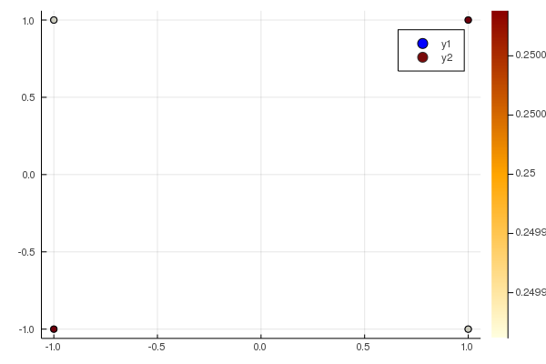

The minimizers of Motzkin polynomial
using DynamicPolynomials, MomentTools, Plots;
using JuMP, MosekTools; optimizer = optimizer_with_attributes(Mosek.Optimizer, "QUIET" => true);We use Mosek solver for the convex optimization on SDP matrices.
X = @polyvar x y
motz = x^4*y^2 + x^2*y^4 - 3x^2*y^2 + 1 $ x^{4}y^{2} + x^{2}y^{4} - 3x^{2}y^{2} + 1 $
This polynomial, known as Motzkin polynomial, is non-negative but not a sum of squares.
We construction a moment relaxation of order 6, imposing the moments to come from a probability measure, with total mass equal to 1:
M = MomentModel(X, 6, optimizer)
constraint_unitmass(M)
objective(M,motz)
v, M = optimize(M)(-1.6742123696021906e-10,
A Moment program with:
A JuMP Model
Minimization problem with:
Variables: 91
Objective function type: GenericAffExpr{Float64,VariableRef}
`GenericAffExpr{Float64,VariableRef}`-in-`MathOptInterface.EqualTo{Float64}`: 1 constraint
`Array{VariableRef,1}`-in-`MathOptInterface.PositiveSemidefiniteConeTriangle`: 1 constraint
Model mode: AUTOMATIC
CachingOptimizer state: ATTACHED_OPTIMIZER
Solver name: Dual model with Mosek attached
Names registered in the model: basis, degree, dual, index, moments, monomials, nu, variables, y)v-1.6742123696021906e-10The objective value is a lower bound of the actual mimimal value $0$ of Motzkin polynomial.
We extract a measure from the sequence of moments, using the function MultivariateSeries.decompose:
w, Xi = get_measure(M)(Float64[], Array{Float64}(undef,2,0))w is the vector of weights and Xi is the matrix of points, that is support of the measure $\mu=\sum_i \omega_i \delta_{\Xi_i}$. w[i] is the weight of the Dirac measure corresponding to the point Xi[:,i] in this decomposition.
Here no point is found to approximate the optimal moment sequence.
Now, to find the minimizers, we add as constraints, that the gradient of the polynomial should vanish:
M = MomentModel(X, 6, optimizer)
constraint_unitmass(M)
objective(M,motz)
J = differentiate(motz,X)
constraint_zero(M, J...)
v = optimize(M)[1]3.6962168659115946e-8w, Xi = get_measure(M)([0.24999999524007935, 0.24999999121486882, 0.2499999912148701, 0.2499999952400783], [1.0000000029258804 1.0000000031154819 -1.0000000031154817 -1.0000000029258806; -1.0000000029933198 1.0000000031156946 -1.0000000031156946 1.0000000029933198])p0 = plot([-1,-1,1,1], [-1,1,-1,1], seriestype = :scatter, color=:blue, fmt=:png)
p1 = plot!(p0,real(Xi[1,:]), real(Xi[2,:]), seriestype = :scatter, zcolor = abs.(w), m = (:heat, 0.8, Plots.stroke(1, :black)), fmt=:png)We find approximately the $4$ minimizers.
Finally, to find the minimizers, we try another strategy and add the constraint that the polynomial should vanish, since we know that its minimal value (at the minimizers) is $0$:
M = MomentModel(X, 6, optimizer)
constraint_unitmass(M)
objective(M,motz)
constraint_zero(M, motz)
v = optimize(M)[1]2.3258039938411912e-10w, Xi = get_measure(M)([0.25000000859132376, 0.24999999061879682, 0.24999999061878705, 0.2500000085913232], [1.000000018789731 1.0000000188469331 -1.000000018846933 -1.000000018789731; 1.0000000188709834 -1.0000000189095657 1.0000000189095657 -1.0000000188709837])p0 = plot([-1,-1,1,1], [-1,1,-1,1], seriestype = :scatter, color=:blue, fmt=:png)
p1 = plot!(p0,real(Xi[1,:]), real(Xi[2,:]), seriestype = :scatter, zcolor = abs.(w), m = (:heat, 0.8, Plots.stroke(1, :black)), fmt=:png)
The minimizers (in red) are close to that actual minimizers (in blue).